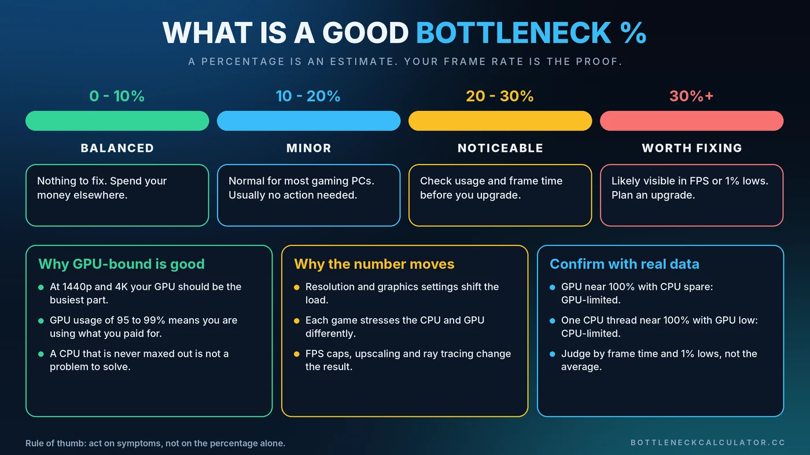

What Is a Good Bottleneck Percentage? 10%, 20% and 30% Explained
You ran a bottleneck calculator and it said 14%. Is that bad? Should you worry about 25%? Here is how to read the number, when it actually matters, and when it is nothing to lose sleep over.

Short Answer: What Is a Good Bottleneck Percentage?
For most gaming PCs, a result under about 10% is effectively balanced, and 10 to 20% is normal and rarely worth acting on. Once an estimate climbs past 20 to 30%, it is worth checking real usage numbers to see whether the limit is hurting your games.
Treat those bands as rules of thumb, not laws. Every game, resolution and graphics setting moves the result, which is why the percentage should start an investigation, not end it.
What a Bottleneck Percentage Actually Means
Picture a wide water pipe feeding a narrow tap. The pipe could deliver far more water, but the tap sets the pace. A bottleneck percentage tries to describe how much of the faster part's potential goes unused because of the slower one.
If a calculator says your CPU limits your graphics card by 15%, it is estimating that the GPU could deliver roughly 15% more performance in that scenario if the CPU could keep up. It is not a measurement taken from your computer. It is an estimate built from component performance data, your resolution and your workload. You can read how ours works in the methodology section, or try it with the Bottleneck Calculator.
Why 0% Bottleneck Is Not the Goal
Every PC has a slowest part. Upgrade the CPU and the GPU becomes the limit. Upgrade the GPU and something else steps up. Chasing 0% means spending money forever to move the limit around.
For gaming at 1440p and 4K, the healthy outcome is usually that your graphics card is the busiest component. That means you are getting the most from the part that matters most. If you want the full picture of how the two limits differ, read our guide to the CPU vs GPU bottleneck.
Bottleneck Percentage Guide: What Each Range Means
0 to 10%: Balanced
Your CPU and GPU are well matched for the workload. There is nothing to fix, and swapping parts is very unlikely to produce a difference you can feel. Spend the money on a better monitor, storage or cooling instead.
10 to 20%: Minor
This is where most healthy gaming PCs land. One part is slightly ahead of the other, and that is fine. Unless you are chasing a specific frame-rate target, no action is needed.
20 to 30%: Noticeable
Now it is worth checking real usage. Open an overlay, play a demanding scene and look at GPU usage and frame time. You might find the limit only appears in certain games, at low resolution, or in crowded areas. If so, a graphics setting change or a frame cap may be all you need.
30% and Above: Worth Fixing
A gap this large is often visible as lower frame rates, uneven frame pacing or poor 1% lows. Confirm it with real measurements first, then look at the cheapest fix before a hardware upgrade. Our guide to reducing PC bottlenecks walks through the order to try things.
When a High Bottleneck Percentage Does Not Matter
A big number can be harmless in the right situation:
- High-FPS esports play. If a competitive shooter runs at 300 FPS and is technically CPU-limited, your monitor may not even show every frame.
- Capped frame rates. If you cap at 60 or 144 FPS, the spare headroom on either part is simply unused, by design.
- 4K single-player games. The GPU does the heavy lifting and the CPU sits mostly idle. That is the expected result, not a flaw.
- Different workloads. A result calculated for gaming means little if you mainly edit video or run simulations. Choose the workload that matches how you really use the PC.
When a Low Percentage Can Still Feel Bad
A calculator compares your CPU and GPU. It cannot see everything that makes a game feel rough. A system showing 5% can still stutter because of:
- Too little system memory, covered in our guide on whether 16GB of RAM is enough
- Running out of graphics memory, explained in how much VRAM you need
- Heat, explained in thermal throttling vs a CPU bottleneck
- A slow drive, covered in our storage bottleneck guide
How to Confirm a Bottleneck With Real Data
- Turn on a monitoring overlay. MSI Afterburner with RTSS works well, and Windows Task Manager is a fine start. See our guide to checking PC usage.
- Play a demanding scene for a few minutes, not just a menu.
- Read GPU usage. Around 95 to 99% means the game is GPU-limited, which is usually healthy.
- Check each CPU core. One thread near 100% while the GPU sits well below that points to a CPU limit.
- Run a resolution test. Drop the resolution. If FPS barely rises, the CPU is the limit. If FPS jumps, the GPU was.
- Watch frame time and 1% lows, not only the average. Smoothness is what you actually feel.
For a deeper walkthrough, see how to check a PC bottleneck.
What to Do at Each Level
Try the free fixes before spending money:
- Raise resolution or graphics quality so the GPU takes more of the load
- Set a sensible FPS cap to remove wasted work
- Enable XMP or EXPO in the BIOS so your memory runs at its rated speed
- Close background apps and update graphics drivers
If real measurements still show a limit that bothers you, then look at hardware. Our PC upgrade checklist and CPU and GPU pairing guide help you pick the right part without overspending.
Conclusion
A good bottleneck percentage is a modest one, and "modest" covers a wide range. Under 10% is balanced, up to 20% is normal, and beyond that you should verify with real usage and frame-time data. Use the number as a starting point, then let your own games tell you whether it matters. To get your starting estimate, run your parts through the free Bottleneck Calculator.
Frequently Asked Questions
What is a good bottleneck percentage?
For most gaming PCs, under 10% is effectively balanced and 10 to 20% is normal. Above 20 to 30% it is worth confirming with real GPU usage and frame-time data, because the estimate alone cannot tell you how a specific game behaves.
Is a 10% bottleneck bad?
No. A 10% bottleneck is very common and usually not noticeable in real gameplay. It rarely justifies buying new hardware.
Is a 20% or 30% bottleneck bad?
It depends on the game and settings. At 20% you should check real usage before acting. At 30% or more the limit is often visible as lower FPS or rough frame pacing, so a settings change or an upgrade may be worthwhile.
Can a PC have a 0% bottleneck?
Not in practice. Some component is always the slowest part, and the limit changes between games, resolutions and settings. The aim is a balanced system where the right part, usually the GPU in modern games, does most of the work.
Are bottleneck calculators accurate?
They are best used as a quick estimate. They compare component performance and cannot see your cooling, memory speed, background apps or the exact game. Confirm any result with a monitoring overlay while you play.